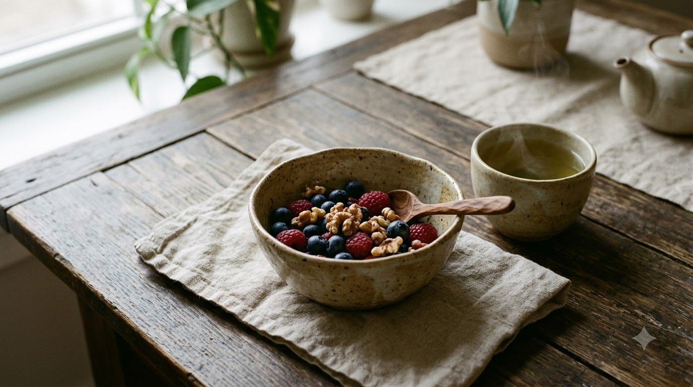

Mindful Breathing
Your breath travels with you everywhere. Whenever you feel overwhelmed during work or travel, taking three slow, conscious breaths grounds the nervous system and returns awareness to the immediate present.
Mindfulness is the simple art of paying attention to what is happening right now, with curiosity and without judgment. Learn how to weave presence into everyday moments.
Mindfulness is not a trance state or an attempt to silence the mind. Rather, it is the deliberate habit of being conscious of our present experience—our thoughts, sensations, emotions, and environment—without rushing to react or categorize them.
When practiced regularly, mindfulness creates a gentle gap between an external stimulus and your internal response. In that small space lies your freedom to choose calm over habitual stress.
You do not need to be sitting on a meditation cushion to practice mindfulness. Explore these four practical somatic doorways.
Your breath travels with you everywhere. Whenever you feel overwhelmed during work or travel, taking three slow, conscious breaths grounds the nervous system and returns awareness to the immediate present.
Transform a standard hallway transit or park walk into a grounding meditation. Feel the pressure shifts in your soles, the gentle movement of air against your skin, and the cadence of natural locomotion.

Slow down during mealtime by eating without screens or rushing. Observe aromas, textures, colors, and flavors, reconnecting with the genuine sustenance of food and cultivating intuitive nourishment.
Ordinary chores—washing dishes, preparing tea, watering plants, or pausing at red lights—become micro-sanctuaries of presence when performed with intentional, single-tasked attention.
An illustrative, approachable sequence to anchor presence across the natural progression of your day.
Before checking notifications or reaching for your phone, pause on the edge of your bed. Place one hand on your heart and one on your abdomen. Take five slow breaths, feeling yourself fully arrive into the day.
Notice physical posture. Are your shoulders raised near your ears? Is your jaw clenched? Unclench the jaw, drop the shoulders down, and exhale completely through softened lips.
Step away from screens during the first few bites of your meal. Appreciate the colors, aromas, and tastes of your nourishment with undivided attention.
When switching between work tasks or leaving the workplace, pause before opening the door or stepping into transit. Breathe consciously to mentally close the previous chapter.
Sit quietly or recline on a comfortable mat. Practice a brief body scan, gently thanking your physical body for carrying you through the day and allowing tension to dissolve into the floor.
Essential reminders to keep your practice kind, sustainable, and free of unnecessary pressure.
Three conscious minutes every single day does far more to retrain the brain than an hour of sitting once a month. Start small.
When your mind wanders—which it naturally will—do not judge yourself. Noticing you wandered is itself the mindful moment!
There is no "good" or "bad" mindfulness session. Some days your mind will feel busy; simply observing the busyness is wholehearted practice.
Join one of our scheduled mindfulness sessions to sit with experienced facilitators and a supportive community.